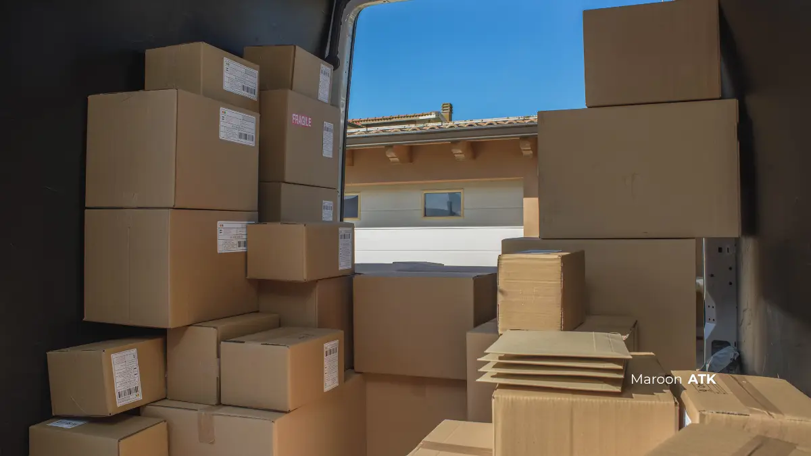

Cara Mengatasi Kesalahan Pengadaan ATK Melalui Sistem Inventarisasi
Kesalahan dalam pengadaan ATK umumnya berasal dari minimnya pencatatan stok dan koordinasi internal, bukan sekadar salah memilih vendor. Masalah ini dapat dicegah secara preventif jangka panjang melalui penerapan sistem inventarisasi terstruktur berbasis reorder point, validasi terpusat, dan integrasi dengan vendor pengadaan resmi yang berjadwal konsisten.
Banyak perusahaan mengalami kebocoran anggaran operasional hanya karena tidak mengetahui jumlah pasti pulpen, map, dan kertas di gudang kantor. Masalah ini jarang disadari sampai stok benar-benar habis di tengah kebutuhan mendesak, atau sebaliknya, gudang menumpuk barang yang sama karena dua divisi memesan item serupa tanpa saling berkoordinasi.
Apa Kesalahan dalam Pengadaan ATK?
Kesalahan dalam pengadaan ATK adalah kegagalan proses perencanaan, kalkulasi, dan pencatatan kebutuhan alat tulis kantor yang menyebabkan ketersediaan stok tidak sesuai kebutuhan riil operasional, baik berupa kekurangan (stockout) maupun penumpukan berlebih (overstock).
Kesalahan ini paling sering muncul bukan karena kualitas produk atau harga dari pemasok, melainkan karena ketiadaan sistem pencatatan tertulis yang konsisten di internal perusahaan. Akibatnya, tim Purchasing dan General Affairs sering kali baru menyadari kekosongan stok saat kebutuhan sudah mendesak, misalnya menjelang rapat dewan direksi, penandatanganan kontrak kerja sama, atau audit dokumen tahunan.
Kenapa Kesalahan Pengadaan ATK Penting Diperbaiki?
Kesalahan pengadaan ATK sangat penting untuk segera diperbaiki karena berdampak langsung pada efisiensi anggaran operasional (OpEx), kelancaran produktivitas karyawan, dan akurasi pelaporan akuntansi perusahaan maupun instansi.
Dampak yang paling terasa adalah pemborosan anggaran akibat overstock barang yang jarang terpakai, serta hilangnya waktu produktif ketika staf harus mencari alternatif pembelian dadakan saat stok kosong. Untuk instansi pemerintah dan BUMN, kesalahan pencatatan pengadaan barang juga berisiko memicu temuan saat proses audit internal maupun eksternal, mengingat seluruh dokumentasi stok dan realisasi anggaran pengadaan wajib dapat dipertanggungjawabkan secara transparan.
Apa Saja Jenis Kesalahan dalam Pengadaan ATK yang Paling Umum Terjadi?
Dalam praktik operasional perkantoran sehari-hari, beberapa kesalahan mendasar kerap berulang tanpa mitigasi yang jelas:
- Stockout mendadak: Terjadi ketika tidak ada batas stok minimum yang dipantau secara rutin, sehingga kekosongan barang baru disadari saat staf divisi operasional membutuhkannya secara mendesak.
- Overstock barang tertentu: Penumpukan barang dalam volume berlebih, misalnya kertas HVS atau tinta printer, karena pengajuan pembelian dilakukan tanpa memeriksa fisik sisa stok yang masih tersimpan di lemari arsip atau rak logistik.
- Purchase Order ganda (duplikasi pesanan): Dua divisi berbeda menerbitkan Purchase Order (PO) untuk item yang sama secara terpisah karena tidak ada sistem verifikasi terpusat yang saling terhubung.
- Human error pencatatan manual: Pencatatan stok yang mengandalkan buku tulis atau spreadsheet sederhana rentan terhadap salah input angka, salah hitung saldo akhir, atau kelalaian pembaruan data tepat waktu.
Bagaimana Cara Kerja Sistem Inventarisasi ATK yang Efektif?
Sistem inventarisasi ATK yang efektif bekerja dengan mencatat setiap pergerakan transaksi keluar-masuk barang secara real-time, menetapkan batas ambang otomatis, dan memvalidasi alur pengajuan agar terhindar dari pemborosan.

Penerapan batas minimum stok (reorder point) di gudang kantor memastikan sinyal pemesanan terkirim otomatis sebelum persediaan habis total.
Penerapan Batas Stok (Reorder Point)
Perusahaan menetapkan batas minimum dan maksimum untuk setiap item, misalnya kertas HVS minimal 5 rim dan maksimal 20 rim. Ketika stok mencapai batas minimum, sistem otomatis memberi sinyal untuk pengadaan baru.
Validasi Terpusat Mencegah Duplikasi
Sistem Enterprise Resource Planning (ERP) atau aplikasi inventaris terpusat dapat mengunci validasi otomatis sehingga mencegah penerbitan Purchase Order ganda untuk item yang sama.
Digitalisasi dengan Barcode atau QR Code
Meninggalkan pencatatan manual dan beralih ke barcode atau QR code terbukti mampu mempercepat proses stock opname hingga 50 persen dan menekan angka kesalahan pencatatan human error hingga 70 persen.
Faktor Apa Saja yang Memengaruhi Akurasi Pengadaan ATK?
Akurasi pengadaan ATK dipengaruhi oleh konsistensi pencatatan, jumlah divisi yang terlibat, frekuensi stock opname, dan keandalan jadwal pengiriman dari vendor.
Semakin banyak divisi yang mengajukan kebutuhan ATK secara terpisah tanpa sistem terpusat, semakin tinggi risiko duplikasi dan kesalahan pencatatan. Frekuensi stock opname yang jarang juga membuat selisih data semakin besar seiring waktu.
Faktor lain yang sering luput dari perhatian adalah keandalan vendor itu sendiri; sistem inventarisasi secanggih apa pun tidak akan efektif jika pengiriman barang dari pemasok sering terlambat atau tidak sesuai jadwal.
Faktor berikutnya adalah komitmen manajemen dalam menjadikan pencatatan stok sebagai bagian dari prosedur kerja standar, bukan sekadar inisiatif sementara. Tanpa dukungan kebijakan internal yang jelas, staf gudang atau admin cenderung kembali ke kebiasaan lama, yaitu mencatat seadanya di buku atau spreadsheet yang tidak terhubung dengan divisi lain.
Selain itu, jumlah titik distribusi juga berpengaruh; instansi dengan banyak cabang atau lantai kerja terpisah membutuhkan sistem yang dapat diakses dan diperbarui secara real-time oleh semua pihak terkait agar data stok pusat tetap akurat.
Apa Dampak Kesalahan Pengadaan ATK terhadap Anggaran Perusahaan?
Kesalahan pengadaan ATK berdampak langsung pada pembengkakan anggaran operasional, baik melalui pembelian mendadak dengan harga lebih tinggi maupun penumpukan stok yang akhirnya tidak terpakai secara optimal.
Ketika stok habis mendadak, tim Purchasing sering terpaksa melakukan pembelian darurat dalam jumlah kecil dengan harga satuan yang lebih mahal dibanding pembelian terjadwal dalam volume besar.
Di sisi lain, overstock membuat dana perusahaan tertahan pada barang yang belum tentu terpakai dalam waktu dekat, sementara barang tersebut tetap membutuhkan ruang penyimpanan dan berisiko rusak atau kedaluwarsa, terutama untuk item seperti tinta printer.
Akumulasi kedua masalah ini dalam jangka panjang dapat membuat anggaran ATK tahunan sulit diprediksi dan sulit dipertanggungjawabkan dalam laporan keuangan.
Manual vs Sistem Digital, Mana yang Lebih Efektif Mencegah Kesalahan Pengadaan ATK?
Sistem digital umumnya lebih efektif mencegah kesalahan pengadaan ATK dibanding pencatatan manual karena mengurangi human error dan mempercepat proses stock opname secara signifikan.
| Aspek Parameter | Pencatatan Manual | Sistem Digital Terpusat |
|---|---|---|
| Risiko Human Error | Tinggi, dapat mencapai 35 persen ketidakakuratan data | Rendah, tervalidasi otomatis oleh sistem |
| Kecepatan Stock Opname | Lambat, dilakukan satu per satu lembar fisik | Lebih cepat hingga 50 persen dengan barcode/QR code |
| Risiko PO Ganda | Tinggi tanpa koordinasi antar divisi | Dicegah melalui validasi terpusat sistem |
| Skalabilitas | Sulit untuk kebutuhan skala besar multi-cabang | Mudah diskalakan untuk banyak divisi atau cabang |
Meski demikian, sistem digital tetap membutuhkan disiplin input data dari penggunanya. Pemilihan sistem sebaiknya disesuaikan dengan skala organisasi, jumlah divisi, dan kompleksitas kebutuhan ATK sehari-hari.
Bagi instansi dengan anggaran terbatas, transisi bertahap dari pencatatan manual ke sistem digital sederhana berbasis spreadsheet dengan validasi otomatis dapat menjadi langkah awal sebelum berinvestasi pada ERP yang lebih kompleks.
Bagaimana MAROON ATK Membantu Mencegah Kesalahan Pengadaan ATK?
MAROON ATK membantu mencegah kesalahan pengadaan ATK melalui Sistem Paket Pengadaan Bulanan dengan harga tetap dan jadwal pengiriman terencana yang mengisi buffer stock sebelum batas minimum tersentuh.
Sistem inventarisasi secanggih apa pun akan percuma jika pengiriman dari supplier sering terlambat. Ketidaksesuaian jadwal pengiriman inilah yang sering membuat perusahaan tetap mengalami stockout meski sudah memiliki sistem pencatatan yang baik.
Sebagai kesalahan dalam pengadaan ATK yang kerap luput dari perhatian, ketergantungan pada vendor yang tidak konsisten perlu diselesaikan bersamaan dengan pembenahan sistem internal.
MAROON ATK menyediakan produk ATK lengkap dengan dokumen legal seperti Surat Penawaran Harga dan e-Faktur PPN, sehingga tim Purchasing dapat mengintegrasikan sistem inventaris internal dengan jadwal pengadaan yang terencana.
Bagi organisasi yang juga sedang menyusun kebutuhan alokasi ATK per staf, pembahasan lebih lanjut dapat dilihat pada artikel menyusun paket pengadaan ATK untuk staf.
Selain kebutuhan ATK, kebutuhan pengadaan kantor juga sering berkaitan dengan kebutuhan furniture kantor dan perangkat teknologi interaktif seperti videotron, yang idealnya direncanakan dalam satu ekosistem pengadaan yang sama agar dokumentasi legal dan anggaran lebih mudah dikontrol.
MAROON ATK melayani kebutuhan pengadaan ATK, furniture kantor, dan teknologi interaktif untuk instansi di Jakarta, Surabaya, Malang, Denpasar, Makassar, serta wilayah Indonesia lainnya.
Kerangka acuan pengadaan barang dan jasa pemerintah yang berlaku umum juga menekankan pentingnya dokumentasi dan perencanaan kebutuhan yang jelas, sebagaimana diatur dalam pedoman resmi Lembaga Kebijakan Pengadaan Barang/Jasa Pemerintah (LKPP).
Untuk berkonsultasi mengenai kisaran harga dapat bervariasi tergantung spesifikasi, volume pesanan, dan lokasi pengiriman, silakan hubungi tim MAROON ATK melalui WhatsApp untuk penawaran resmi.
Pertanyaan yang Sering Diajukan
Penyebab paling umum adalah tidak adanya pencatatan tertulis yang membuat stok ATK sulit dipantau, sehingga terjadi pemesanan berulang atau kehabisan barang mendadak.
Reorder point adalah batas minimum stok suatu item ATK yang, jika tercapai, memicu sinyal otomatis untuk melakukan pemesanan ulang sebelum barang benar-benar habis.
Sistem manual masih bisa dipakai untuk kebutuhan sangat kecil, namun rawan human error dan sulit diskalakan dibanding sistem digital berbasis barcode atau QR code.
Purchase Order ganda dapat dicegah dengan sistem inventarisasi terpusat yang memvalidasi otomatis sehingga dua divisi tidak lagi memesan item yang sama tanpa saling tahu.
Tidak cukup, karena sistem inventarisasi hanya efektif jika didukung pengiriman vendor yang terjadwal dan konsisten agar buffer stock tidak terlambat terisi.

Asher Angelica
Praktisi procurement dan konsultasi interior korporat yang berfokus pada standarisasi material ramah lingkungan, efisiensi tata kelola inventaris ATK, dan pengadaan fasilitas B2B di Indonesia.